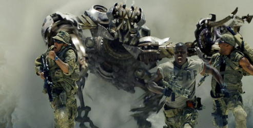
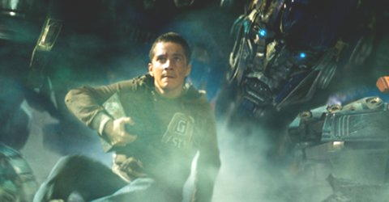
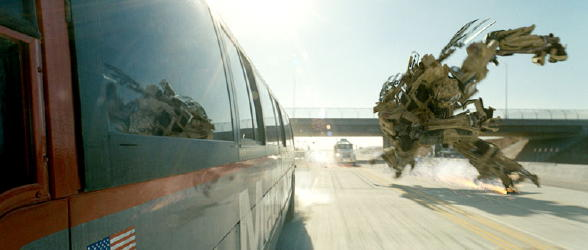

Date Released
: July 3rd, 2007 (July
2nd in select theaters)
MPAA Rating
: PG-13
Starring
: Shia LaBeouf, Rachael
Taylor, Megan Fox, Tyrese Gibson, Josh Duhamel, John Turturro, Jon Voight,
Anthony Anderson, Peter Cullen (voicing Optimus Prime), Hugo Weaving (voicing
Megatron)

Well, it's finally here.
After all this time, we Transformers fans FINALLY have a live action movie
to call our own! But is it a badly written piece of shiny crud, or something
that will grow the fandom and make Transformers mainstream? Well, if the
earnings the movie is taking in are any indication, it's the latter. Of
course, popularity isn't necessarily an indicator of how good something
is. But it certainly is in this case! In short, the Transformers movie
is AMAZING, and simply mind-blowing. It's not perfect, but it's very very
close, as far as I'm concerned. I'll get to the few small beefs I have
with the movie later, but right now I want to gush about the awesomeness
of this movie. Eee!
Firstly-- and this should
come as no surprise to those who are familiar with Director Michael Bay's
work-- the action scenes are mind-blowing. And that's the understatement
of the year right there, folks. To put it more succinctly, the action scenes
are the best I have seen in any movie. Ever. Especially the last 30 minutes
or so of the flick, during a huge final battle downtown. The amount of
destruction is amazing, and weight is given behind every footstep and punch
every Transformer makes. Several things are happening at once, to the point
where you pretty much HAVE to watch the movie 2 or 3 times just to catch
everything. A few people have complained that the camera is a bit TOO shaky
and the movement a bit TOO fast, but I only found this happened in one
or two shots where multiple Transformers were going at it all at once,
where it really SHOULD be absolutely chaotic-- certainly nothing I would
complain about. One particular shot I absolutely LOVE is when Ironhide
transforms from truck mode and blasts his arm cannons into the ground in
slow-motion, propelling him right over a screaming woman in the middle
of the street. Simply drool-inducing. The CGI is also the best I've ever
seen in a movie-- it's 99% realistic, to be sure. 2 or 3 times during the
movie a movement or the way lighting plays off part of the Transformers
may seem just a little
little
off, and that's it. Everything else
looks absolutely, 100% real, and fantastic.
What may be surprising
to some, however, is just how good the actual meat of the story and dialogue
are. The story is pretty solid, with only a few plot holes, which I'll
get to later. Pretty much everything is either explained directly in the
movie or can be figured out pretty well with a bit of thought after the
movie is over. Some things-- such as the origin of the Allspark-- are purposefully
left unexplained to leave them mysterious, of course, but I'd hardly chalk
that up to oversight. The dialogue is also dynamite, and often quite ingenious.
There are VERY few lines I'd consider off or unoriginal. Some of Megatron's
lines, like "Is it fear or courage that compels you?" are especially good,
as is the dialogue between him and Prime. All of the Transformers' voices
fit their characters to a tee-- Ratchet sounds very professional and doctor-ish;
Ironhide sounds like an old warrior; Prime is voiced by his original voice
actor so of COURSE he sounds like Prime; Jazz sounds like a streetwise
black dude; Megatron sounds really evil, still intellligent and not just
a giant monster; and Starscream has a slightly screechier voice than the
others, while still sounding appropriate for a being of his size. Frenzy
just sounds hilarious, like an Ewok on crack. Barricade is the only one
who sounds a little off-- he doesn't sound as evil as his design looks,
his voice really needed to be deeper and he needed to talk slower.


Simply put, Transformers is a Transfan's dream come true. Not only does it offer incredible robot-beating-up-robot action, but it's got a pretty solid story, great dialogue, and some pretty nice humor and music, as well. This movie's pretty much got it all-- GO SEE IT. The first time I saw it was the first time I ever got man tears of happiness, dude. Man tears, I tell ya.
Plot
: 18/20
Characterization
: 8/10
Dialogue
: 15/15
Action
: 20/20
Humor
: 14/15
CGI
: 10/10
Musical Score
: 10/10
Overall Rating
:
95/100
...Wow.